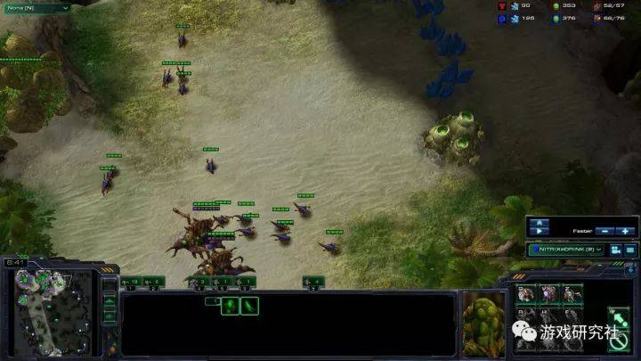

一场“一边倒”的人机对抗：《星际争霸》到底比围棋难在哪儿？
游戏研究社©
2017-11-15 10:13 收藏11 评论16

本文转自微信公众号：游戏研究社（ID：yysaag），作者：偶然轻狂，获授权后转载。
目前在《星际争霸》的项目上，AI还不能给人类选手带来哪怕一点点的压力。
与之前AlphaGo挑战柯洁和李世石时的万众瞩目不同，当人工智能再一次想要挑战人脑时，受到的关注却远没有上一次多。这一次它的对手不是围棋，而是《星际争霸》。
前段时间，韩国首尔世宗大学官方举办了世界首届人类与星际争霸AI的对抗赛，代表人类出战的是前《星际争霸》项目职业选手：Stork（宋炳具），与之对抗的对手则是四个不同的AI，韩国世宗大学金正中教授组织开发的“MJ Bot”，以及来自澳洲的“ZZZK”，挪威的“TSCMO”和Facebook开发的Cherry Pi。
无论是《星际争霸》还是《星际争霸2》，韩国几乎可以说“一直代表着这个游戏的最高实力”。因此，由韩国的科研机构来主办这场比赛自然是相当有说服力的。
经常看《星际争霸》职业比赛的人，一定对Stork（宋炳具）不会陌生。作为星际1时代的“四皇之一”与星际2时代前三星战队总教练的他，绰号“总司令”，拿过一次WCG冠军和五次亚军，在圈子内就是类似于李世石和柯洁一样的存在。他的比赛特点就是发挥相当稳，很少给对手留下破绽。从这一点来看，Stork看起来就是人类选手里最像电脑的人。
而作为电脑AI队伍的头号种子，电脑AI“MJ Bot”也不遑多让。该程序从2011年开发至今已经多次亮相，而且获奖无数，被誉为现今韩国最好的“星际争霸AI”。
当现阶段最强电脑AI碰上前职业选手，有人猜测二者会杀得难解难分。尤其是在看过了AlphaGo在围棋上的强势之后，有人反而觉得电脑的胜算会更高一点。
但是比赛的结果却相当的“平淡”，第一局和MJ的比赛，Stork祭出空投战术，拿到场面优势之后顺手就拆了对手老家。第二局对上ZZZK，Stork和AI同时拿出速推打法，结果AI仍旧败下阵来。第三局面对TSCMO，Stork仍然是速胜。第四局里，Cherry Pi同样也没有给人类选手带来哪怕一点点压力。
至少从目前的情况来看，AI想要在《星际争霸》这个项目上战胜人类，还有很长的路要走。
层层选拔的机器人“对手”在过去的几年之间，以《星际争霸》为基础展开的人工智能研究一直在上演，其历史甚至比围棋上的较量还要早。最著名而且历史最悠久的，肯定要数美国加州大学圣克鲁兹分校举办的AIIDE了。
这场名为AIIDE的比赛，其实本质上是一场人工智能之间的比赛，说白了就是“电脑打电脑”，从2010年开始，每年一届，到今年已是第8年。

每年都会有来自世界各地的大学或者实验室，带来自己的作品来这里进行互相比拼。包括这次比赛的三个AI都是AIIDE的常客，来自澳洲的“ZZZK”是2015年的亚军，来自挪威的“TSCMO”是当年的冠军。而韩国的“MJ”则是名为“Xelenaga”的老牌星际AI的升级版，在AIIDE赛场也是多年混迹于前十名的常客。可以说，这三个在现阶段已经是AI在《星际争霸》领域里的最强选手了。
而在每年的AIIDE最后都有一个保留节目：最后获得冠军的电脑AI会与一名非专业的人类选手进行较量。虽然这样的表演赛看起来更像是一个非正式的“助兴节目”，但是直到2017年的AIIDE，电脑AI对阵人类选手还未尝胜绩——哪怕对手只是普通的星际爱好者。
AIIDE的组织者Dave Churchill曾就此表示：“即使最顶尖的电脑AI，目前也只达到了低级业余的水平（在星际争霸项目中），在人类选手面前就像过家家一样，想要达到AlphaGo在围棋方面的垄断优势，至少还有5-10年的路要走……但是谁也说不好明天会发生什么。”
《星际争霸》究竟比围棋难在哪儿？说AIIDE里的人机对抗还是一场不成熟、不正式的助兴节目，这次韩国举办的比赛应该会让这个论断更有说服力。随着时间的进步，电脑硬件和智能算法的进步要远快于人脑。所以至少到比赛开始之前，无论是星际职业选手，观众还是科研人员，对于结果的预测都很难达成共识。
《麻省理工科技评论》杂志在赛前曾采访过两位顶尖职业选手：2016年《星际争霸2》WCS世界锦标赛的冠军ByuN，以及曾经世界最强的虫族选手之一，现已退役的“暴君”Jaedong。
二人均在采访中表示，愿意代表人类与星际AI来一场公开的较量，但是他们对于谁胜谁负的看法却截然相反，恰好可以代表大部分人对于这场比赛的两种态度。
24岁的ByuN很有信心战胜人工智能。“在有生之年，人工智能绝不是我的对手。” 他说，“在玩《星际争霸》时，你需要对许多未知和变数作出迅速的反应，但是我发现AlphaGo并不擅长处理突发事件……想要设计一个同时可以应对突发情况，又要对比赛的长期发展做出预测的AI是很难的。”
像这样精彩的极限操作，没有任何一个人类选手可以保证在比赛中万无一失
而Jaedong则持相反的观点，他认为人工智能可以轻松战胜人类选手。他说：“AI不知疲倦，而且在重压之下也不会犯错，并且拥有人类生理无法实现的手速（APM）, 如果人工智能技术达到了一个人类无法跟上的速度，那么它将轻松战胜人类。”
职业星际选手的手速在人工智能面前不值一提
这两种观点的矛盾之处，恰恰是人们对于“想要赢，什么条件最重要”的讨论。换句话讲，就是在问：AI为什么在《星际争霸》项目上会输呢？或者是问：为什么要选择《星际争霸》这款游戏来作为研究人工智能AI的样本呢？
相比于之前AlphaGo擅长的“完全信息博弈”的围棋，《星际争霸》显然是一个拥有更多不确定因素的游戏。在围棋对弈时，AI可以看清楚棋盘上的每一个位置，然后依靠自己比人脑强大无数倍的计算能力，衡量每一步落子所带来的收益，然后确定最优的方案。这种能力是人脑再开发到极限也是无法实现的。
而在游戏中，AI的这种优势其实并无太多用武之地。熟悉RTS（即时战略）游戏的玩家应该都了解“战争迷雾”这种机制。AI并没有“作弊”读取正在进行中的游戏的内存数据的话，它是无法得知玩家现阶段在布置何种战术，因此也就无法提前做出“最优判断”。而这种判断对于RTS的获胜来说才是至关重要的。即使AI洞悉了玩家的战术，他也未必能即时做出改变，甚至有可能被玩家“虚晃一枪”。
职业选手ByuN就表示他会使用"非常规的策略和战术"来迷惑AI。“我会阻止它开视野，发现我的基地布局和建筑顺序。”ByuN说，"如果我的基地被发现，我会选择停止所有建筑计划。”

AI在信息对等的情况下，临机应变的能力不如人类，星际需要玩家对资源控制，升级先后顺序，不同种族和兵种相互克制等方面有整体的认识。这种互相牵制的效果，即是游戏平衡性的由来。这方面的整体考虑远比下围棋时只考虑黑子和白子的位置更加复杂。
考虑到人工智能在APM手速和精确微操方面优势明显，这可能成为另外一个能决定比赛最终结果的重要因素。
曾经有人设计出一种 “悍马2000（Automation 2000）”的脚本，极限APM达到15000（顶尖职业选手APM大约为200+），实现了一系列诸如“100只狗拆掉20辆坦克”、“机枪兵甩毒爆”、“无双运输机甩牛”等眼花缭乱的壮举。如果在现实比赛中出现，无疑可以给人类玩家造成巨大的心里压力，甚至一举奠定胜利基础。
100只狗 VS 20辆坦克
虽然顶尖职业选手也曾在比赛中上演过类似的操作，但是毕竟在正式比赛的高压之下，没人敢说一定能成功。在这种前提下，电脑与人脑看起来是在不平衡的前提下进行对决。官方似乎也注意到了这一点，暴雪和DeepMind团队也强调过，未来的人工智能并不会拥有非人类的逆天操作，他们将会通过限制人工智能的APM来保证它的操作，也会有类似人类的极限和失误。
电脑控制下的机枪兵甩毒爆
但是艺高人胆大的ByuN再一次站出来反对了，他说：“任何限制人工智能的举动都会令‘人机大战’失去意义。 ”
启示目前除了这些老牌的星际AI在不断进化之外，也有更多人工智能科研团队加入进来。其中最有代表性的就是曾主导了AlphaGo开发的DeepMind团队。
AlphaGo 2.0在版本（即完胜柯洁的版本）时，已经可以通过自我博弈达到学习的目的。如果这种技术应用到游戏中的话，可能会彻底改变目前星际AI打法都是人工设定好的，容易被针对的现状，甚至会诞生出一些新的战术和玩法，以启发职业选手。
在2016年的暴雪嘉年华开幕式上，谷歌的研究人员就上台宣布了DeepMind目前和暴雪共同开发星际AI的计划和工作进展
而由Elon Musk赞助的人工智能项目OpenAI，也同样将目标瞄准了《星际争霸》为代表的对抗性游戏。在今年的Dota2 Ti7全球总决赛上，它就以压倒性的优势战胜了代表人类玩家的顶级选手Dendi。虽然二者对决并非建立在完整的游戏规则之上，但是在中路一对一对线的表演中，OpenAI在走位，补兵的操作上没有一丝失误，这也再一次映证了电脑AI在操作方面仍然有着先天性的优势。
来自中国阿里巴巴人工智能实验室和伦敦大学的研究人员也在以星际为样本，研究人工智能对多种单位协同控制的能力，并且取得了不错的成绩。
众多科研机构能够如此顺利进行星际AI研究，要多亏了暴雪官方在游戏上对开放性做出的让步。针对《星际争霸1》，暴雪专门针对母巢之战版本开放了BWAPI编程接口，保证了开发者可以针对游戏操作来不断优化人工智能的算法，同时还保证了“公平性”：AI基本上只能按照人类的思维方式向游戏下达指令，基本上人类可以做到哪些事情，AI也就只能做到这个地步，从而杜绝了对于电脑会“作弊”的担忧。
针对《星际争霸2》，暴雪则和DeepMind团队合作推出了SC2LE（StarCraft II Learning Environment）——一个星际争霸2（StarCraft2）的工具包，为研究提供了非常大的帮助。
通过暴雪开放的官方接口，已经可以测试AI在某些特殊任务中的行为
显然，研究一款游戏AI不是所有研发人员的最终目的。谷歌曾经透露，更多的意义是通过这种研究来帮助人类改善生活。
如果仅从《星际争霸》这款游戏来看，人工智能在不久的将来，可以成为人类选手训练的最佳伴侣。更进一步讲，当人工智能技术成熟之后，提供给人类的可能更像是星际争霸中副官的形象，协助我们分析局面，提供建议。当然，这样的前提是我们电脑AI能“更像一个真人”或者一个“冷静的旁观者”，这样最终的决定权就仍然掌握在我们自己手中。
最后提醒一句，那些曾经给柯洁出主意，让他“拔掉AlphaGo插头”的人要注意了，星际AI可不吃这一套。因为《星际争霸2》对战时掉线，是可以重连的。
*文章为作者独立观点，不代表遇言网立场
本文由 游戏研究社 授权 遇言网 发表，并经遇言网编辑。转载此文章须经作者同意，并请附上出处(遇言网)及本页链接。原文链接https://www.huxiu.com/article/222110.html